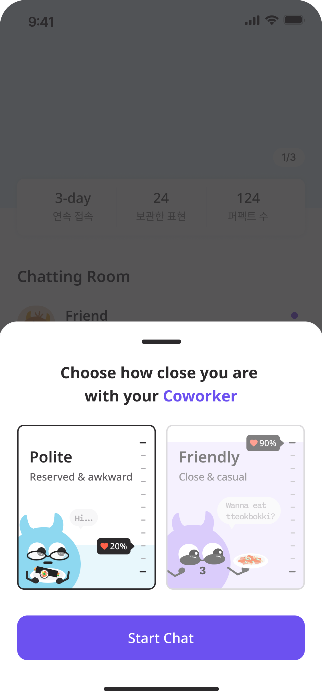
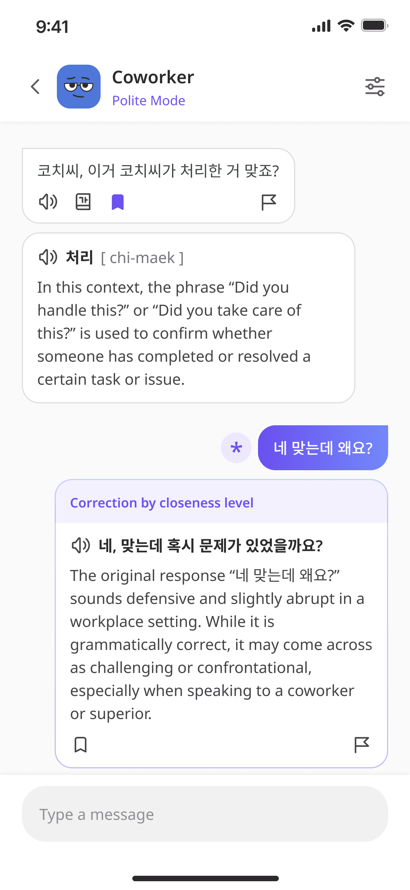
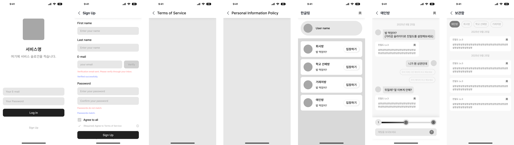

01발견한 문제
한국어 표현이 문법적으로 맞더라도 관계와 문화적 맥락에 따라 어색하게 전달될 수 있습니다.
한국 사회·정서 문화를 학습한 챗봇과 실제 대화처럼 배우는 AI 한국어 회화 서비스


koach는 한국 사회·정서 문화를 기반으로 자연스러운 회화 학습을 돕는 AI 챗봇 서비스입니다. 챗봇을 통해 실제 한국인과 대화하는 경험을 제공하고, 관계와 상황에 맞는 표현을 익히도록 기획했습니다. PL로서 서비스 기획·운영과 AI 품질 개선, 유저 행동 데이터 기반의 UX·퍼널 개선을 진행했습니다.
한국어 표현이 문법적으로 맞더라도 관계와 문화적 맥락에 따라 어색하게 전달될 수 있습니다.
한국 문화와 관계·상황의 맥락을 반영한 챗봇을 통해 실제 한국인과 대화하듯 학습하면, 자연스러운 표현을 익히는 데 도움이 될 것이라고 보았습니다.
멀티 에이전트 파이프라인과 RAG로 대화 품질을 개선하고, GA4 지표 설계와 유저 행동 데이터 분석을 바탕으로 온보딩·채팅 전환 흐름을 개선했습니다.
문제 정의부터 출시까지, 서비스를 만들며 거친 순서대로 담았습니다.
단어와 문법을 아는 것만으로는 실제 대화에서 자연스러운 한국어를 구사하기 어렵습니다. 한국 문화를 학습한 챗봇을 통해, 실제 한국인과 대화하듯 표현을 익히는 경험을 기획했습니다.
응답자의 80% 이상이 예의, 격식 때문에 곤란했던 경험이 있다고 답했습니다.
상황과 친밀도에 맞춰 문장을 교정하는 AI 서비스를 사용해 보고 싶다는 응답은 96%였습니다.
친구 사이의 줄임말과 문자체 등 실제로 쓰는 표현이 학습에 도움이 된다는 응답은 92%였습니다.
출처: koach 1차 유저리서치 결과 요약 · 2025.09 · 17명 응답
상대와의 관계에 따라
예의와 격식을 판단하기 어려움
거리감 슬라이더친밀도와 격식을 설정하는 대화
지금 상황에 맞는
자연스러운 표현을 알고 싶음
대화 속 맞춤 교정문화적 맥락에 맞는 표현과 이유 안내
교재의 정형화된 표현만으로는
실제 일상 대화에 한계
한국 문화 기반 챗봇일상 대화로 실제 쓰는 표현 학습
한국 문화를 학습한 챗봇을 통해,
실제 한국인과 대화하듯 배우는 한국어.
| 요구 기능 | 관련 화면 | 사용자 요구사항 | 기획 목적 |
|---|---|---|---|
| 회원가입 | DOR_JO_001 | 사용자가 이메일·비밀번호·이름 필수 정보를 입력하고 약관에 동의하면 계정이 생성된다. - 이메일 인증 후순위 | 신규 사용자가 계정을 생성하고, 서비스 이용을 위한 기본 정보를 등록할 수 있도록 한다. |
| 로그인 | DOR_LO_001 | 사용자가 이메일과 비밀번호를 입력하면, 검증 후 메인 화면으로 이동한다. | 기존 사용자가 안전하게 서비스에 접근할 수 있도록 한다. |
| 로그아웃 | DOR_CH_001 | 로그아웃 시 세션이 삭제되고 로그인 화면으로 이동한다. | 사용자가 현재 세션을 종료하고, 계정을 안전하게 보호할 수 있도록 한다. |
| 계정 탈퇴 | DOR_CH_001 | 탈퇴 시 세션이 삭제되고 로그인 화면으로 이동한다. | 사용자가 계정을 탈퇴할 수 있도록 한다. |
| 채팅방 조회 | DOR_CH_001 | - 기본 채팅방 4개를 제공한다. (친구방, 애인방, 학교 선배방, 회사 선배방) - 사용자가 특정 채팅방을 클릭하면 해당 채팅방으로 진입한다. - 채팅방에 진입할 때마다 AI가 먼저 말을 건네는 인트로 메시지가 노출된다. - 이 인트로 메시지는 매번 달라지며(DB에서 순서대로 호출), 사용자에게 새로운 대화를 제공한다. | 사용자가 서비스에서 제공하는 기본 채팅방 목록/내용을 확인하고, AI와 대화를 시작할 수 있도록 한다. |
| 친밀도 설정 | DOR_CH_002 | 사용자가 선택한 친밀도에 따라 AI 응답의 말투·뉘앙스가 달라진다. | 채팅방에서 상대방과의 친밀도(조금, 보통, 많이)를 설정하여 이에 따른 격식을 표현에 반영할 수 있도록 한다. |
| AI 채팅 | DOR_CH_002 | - 사용자가 입력한 문장과 사용자가 설정한 친밀도에 따라 AI가 교정/응답한다. - AI가 보낸 메시지에 대한 제안 답변을 제공한다. | 자연스러운 대화 경험을 통해 학습 효과를 제공한다. |
| 표현 보관 | DOR_ST_001 | 사용자가 특정 표현을 보관 처리하면 보관함 페이지에서 다시 확인 가능하다. | 학습한 표현을 저장·복습할 수 있도록 한다. |
| 화면 ID | 구분 | 주 기능 | 처리 로직 | 입력값 | 출력값 | 예외 | 비고 |
|---|---|---|---|---|---|---|---|
| DOR_JO_001 | 회원가입 | 1.1 자사 서비스 계정 생성 | 1. 필수 항목 입력 확인 2. 비밀번호 일치 여부 확인 3. 약관 동의 체크 확인 4. DB에 사용자 계정 생성 | 1. First name 2. Last name 3. 이메일 4. 비밀번호 5. 비밀번호 확인 6. 약관 동의 체크 | 1. 회원가입 완료 팝업 안내 → 로그인 화면 이동 | 1. 이메일 중복, 비밀번호 불일치, 약관 미동의 시 계정 생성 불가 2. 필수 정보 미입력 시 계정 생성 불가 3. 서버 오류 1) Error Code 500, 400 페이지 이동 2) 버튼 정상 노출 및 클릭 시 로그인 화면 이동 | 이메일 인증 후순위로 두고 진행 |
| DOR_LO_001 | 로그인 | 2.1 계정 로그인 | 1. 입력값 검증 (형식 확인) 2. DB에서 이메일, 비밀번호 매칭 (암호화 비교) 3. 성공 시 세션/토큰 발급 | 1. 아이디(이메일) 2. 비밀번호 | 서비스 메인 홈으로 이동 | 1. 입력 오류: 이메일 형식이 올바르지 않을 경우 헬퍼텍스트 노출 : Please enter a valid email address. 2. 비밀번호 불일치: 입력한 비밀번호가 DB 저장 값과 다를 경우 에러메시지 노출 : Please check your password format. | 소셜 로그인 (Google) |
| DOR_CH_001 | 메인홈(채팅목록) | 3.1 채팅방 목록 조회 | 1. 서비스에서 기본 제공 채팅방 4개 로드 2. 고정 정렬 3. 사용자가 채팅방 클릭 시 해당 대화 화면 진입 4. 진입 시 AI가 인트로 메시지 발송(DB에서 순차 호출) | 메인홈 진입 | 1. 채팅방 목록 표시 2. 입장 시 AI 메시지 출력 | 1. 서버 오류 1) Error Code 500, 400 페이지 이동 2) 버튼 정상 노출 및 클릭 시 메인홈 화면 이동 | |
| 3.2 서비스 소개 | 상세 보기 | 서비스 소개서 페이지 | |||||
| 3.3 서비스 이용약관 동의 | 상세 보기 | 서비스 이용약관 페이지 | |||||
| 3.4 개인정보처리방침 동의 | 상세 보기 | 개인정보처리방침 페이지 | |||||
| 3.5 문의사항 | 상세 보기 | 구글 폼 링크 | |||||
| 3.6 계정 로그아웃 | 1. 세션/토큰 즉시 만료 2. 휘발성 캐시 데이터 삭제 | 1. 사용자 ID 2. 로그아웃 버튼 | 로그아웃 시 로그인 화면 이동 | ||||
| 3.7 계정 탈퇴 | 1. 탈퇴 요청 2. 탈퇴 완료 3. DB 내 계정 정보 및 데이터 삭제 4. 세션/토큰 만료 | 1. 사용자 ID (2. 비밀번호 확인) 3. 탈퇴 동의 | 탈퇴 완료 시 로그인 화면 이동 | ||||
| DOR_CH_002 | 채팅방 | 4.1 메시지 조회 (첫진입) | 1. 사용자 특정 채팅방 진입 → 채팅방 입장 이벤트 발생 2. 서버가 해당 채팅방 ID 기준으로 메시지 DB 조회 3. 클라이언트 화면에 메시지 렌더링 | 1. 사용자 ID 2. 채팅방 ID 3. 요청 시점(timestamp) | AI가 보낸 메시지 | 1. 서버 오류 1) Error Code 500, 400 페이지 이동 2) 버튼 정상 노출 및 클릭 시 메인홈 화면 이동 | 1. 채팅은 나가면 종료 2. 하루에 한번 제공 |
| DOR_ST_001 | 5.1 보관함 조회 | 1. 사용자가 채팅방 목록 화면에서 보관함 버튼 클릭 2. 서버에서 사용자의 보관함 데이터 호출 3. 보관함 페이지로 이동 4. 방별로 구분된 칩 상단에 노출, 각 칩 선택 시 해당 채팅방에서 저장한 표현만 필터링 | 1. 사용자 ID 2. 보관함 버튼 | 1. 보관함 화면으로 이동 2. 저장된 표현 리스트 3. 방별 저장 표현 | 1. 저장된 표현이 없는 경우, 보관 표현이 없으면 빈 보관함 페이지 이동 2. 서버 오류 1) Error Code 500, 400 페이지 이동 2) 버튼 정상 노출 및 클릭 시 보관함 화면 이동 | ||
| 5.2 메시지 입력 및 전송 | 1. 입력값 유효성 검사 (공백만 입력 시 전송 불가) 2. 서버에 메시지 저장 3. 채팅방 UI에 전송된 메시지 출력 | 메시지 | 메시지 | 서버 오류 시 “Failed to send message” 토스트 메시지 노출 | |||
| 5.3 AI 응답 | 1. 사용자 메시지 → AI 모델 전달 2. 관계/상황 + 친밀도 반영 → 교정/응답 생성 3. 답장 + 설명 응답 4. 설명에 어려운 단어가 있을 경우, 단어 표시 | 메시지 | AI 응답 및 코칭 메시지 출력 | 1. 응답 지연 시 로딩 인디케이터 표시 2. 실패 시 에러 메시지 노출 : Failed to load AI response | 추천 프롬프트 제외 → 답장에 문장 유도 포함 | ||
| 5.4 표현 | 1. 사용자 메시지 입력 2. 관계/상황 + 친밀도 분석 3. 더 어울리는 표현 제안 | 메시지 | AI 응답 및 코칭 메시지 출력 | 1. 실패 시 에러 메시지 노출 : Failed to load AI response | |||
| DOR_ST_001 | 보관함 | 5.5 표현 보관 | 1. 해당 메시지 ID와 사용자 ID를 매핑해 DB 저장 2. 보관함 화면에서 조회 가능 | 보관 버튼 | 1. 보관 처리 완료 표시(UI) 2. 보관함 목록에 반영 | 1. 서버 오류로 저장 실패 시 에러 메시지 노출 : Failed to save | 1. 표현, 단어 저장 2. 추후 검색 기능 추가 |
| 화면ID | 1depth | 2depth | 3depth | type | 개발 구분 | 화면 정의 및 요구사항 | 비고 |
|---|---|---|---|---|---|---|---|
| DOR_LO_001 | 로그인 | page | jsp | 회원은 이메일, 비밀번호로 로그인 할 수 있다 | |||
| DOR_JO_001 | 회원가입 | page | jsp | 회원은 이름, 이메일, 비밀번호를 입력하여 회원가입 할 수 있다 | 이메일 인증 smtp 프로토콜 필요 | ||
| DOR_JO_002 | 개인정보처리방침 | link | html | 회원은 개인정보처리방침을 확인할 수 있다 | 노션으로 링크 연결 | ||
| DOR_JO_003 | 서비스 이용약관 | link | html | 회원은 서비스 이용약관을 확인할 수 있다 | 노션으로 링크 연결 | ||
| DOR_CH_001 | 채팅 목록 | page | jsp | 회원은 회원 정보(이름)와 채팅목록을 확인할 수 있다 | 회원가입 시 받아온 이름 노출 | ||
| DOR_CH_002 | 채팅방 | page | jsp | 회원은 채팅방에서 ai와 채팅을 주고받을 수 있다 | 거리감 슬라이더 수시로 변경 가능 | ||
| DOR_ST_001 | 보관함 | page | jsp | 회원은 저장한 설명을 보관함을 통해 다시 조회할 수 있다 | 채팅방별로 조회 |
회원가입과 로그인은 채팅 목록으로 이어지고,
대화에서 보관한 표현은 채팅방별로 다시 확인합니다.

| 페이지 | 이벤트명 | 태그 | 트리거 | 매개변수 | 매개변수 값 | type | 목적 | 인사이트 |
|---|---|---|---|---|---|---|---|---|
| 로그인 | view_login | 페이지 방문 | 로그인 페이지 진입 시 | 자동 수집 | 로그인 페이지 유입량 파악 | |||
| 로그인 | view_login | 페이지 방문 | 로그인 페이지 진입 시 | |||||
| 로그인 | success_login → login | 버튼 클릭, 전환 | 로그인 완료 시 | user_id | uuid | string | 로그인 및 재방문율 분석 | |
| 로그인 | success_login → login | 버튼 클릭, 전환 | 로그인 완료 시 | date | 로그인 한 날짜 (YYYY-MM-DD) | string | ||
| 로그인 | success_login → login | 버튼 클릭, 전환 | 로그인 완료 시 | method → 추가했습니다! | 로그인 방법 (email / google : 추후 확장) | |||
| 로그인 | success_login → login | 버튼 클릭, 전환 | 로그인 완료 시 | |||||
| 로그인 | fail_login | 버튼 클릭 | login 버튼 클릭 시 | user_id | uuid | string | 사용자 식별 | |
| 로그인 | fail_login | 버튼 클릭 | login 버튼 클릭 시 | error_type | 에러 타입 (wrong_email / wrong_password) 둘 다일 경우⇒ both? | string | 실패 원인별 비율 분석 | 이메일에서 많이들 막힌다면 회원가입 할 때 이메일 형식만 옳게 하면 가입할 수 있어서 그런 것인지? (막 적은 이메일이라 기억을 못해서 그런건지?) → 실제 유효한 이메일 검증 필요 |
| 로그인 | fail_login | 버튼 클릭 | login 버튼 클릭 시 | |||||
| 회원가입 | view_sign_in → page_view 로 통일? | 버튼 클릭, 페이지 방문 | sign in 버튼 클릭 시 (회원가입 페이지 진입 시) | user_pseudo_id | 비로그인 사용자 고유ID | string | 가입 클릭율 측정 | 여기서 이탈률이 높다면 자사 서비스 가입이라 그런 것인지? (간편 로그인이 없기 때문인건지? |
| 회원가입 | view_sign_in → page_view 로 통일? | 버튼 클릭, 페이지 방문 | sign in 버튼 클릭 시 (회원가입 페이지 진입 시) | entry_timestamp | 회원가입 페이지 진입 시점 (UNIX time) | number | 아님 시간이 오래 걸려서인지? (complete_timestamp - entry_timestamp → 평균 회원가입 시간 분석) | |
| 회원가입 | view_sign_in → page_view 로 통일? | 버튼 클릭, 페이지 방문 | sign in 버튼 클릭 시 (회원가입 페이지 진입 시) | |||||
| 회원가입 | sign_up | 버튼 클릭, 전환 | sign up 버튼 클릭 시 (회원가입 완료 시) | user_pseudo_id | 비로그인 사용자 고유ID | string | 가입 전환율 측정 | |
| 회원가입 | sign_up | 버튼 클릭, 전환 | sign up 버튼 클릭 시 (회원가입 완료 시) | complete_timestamp | 가입 완료 시점 (UNIX time) | number | ||
| 회원가입 | sign_up | 버튼 클릭, 전환 | sign up 버튼 클릭 시 (회원가입 완료 시) | |||||
| 회원가입 | sign_up | 버튼 클릭, 전환 | sign up 버튼 클릭 시 (회원가입 완료 시) | user_id → 회원가입 처리 시 바로 유저아이디가 생성된다면 추가부탁드려요! | 유저 아이디 (uuid) | string | ||
| 회원가입 | sign_up | 버튼 클릭, 전환 | sign up 버튼 클릭 시 (회원가입 완료 시) | method → 추가했습니다! | 회원가입 방법 (email / google : 추후 확장) | |||
| 회원가입 | sign_up | 버튼 클릭, 전환 | sign up 버튼 클릭 시 (회원가입 완료 시) | |||||
| 메인 | veiw_chatroom_list → view_main 으로 변경 부탁드립니다! | 페이지 방문 | 메인(채팅목록) 진입 시 | user_id | uuid | string | 사용자 식별 | |
| 메인 | veiw_chatroom_list → view_main 으로 변경 부탁드립니다! | 페이지 방문 | 메인(채팅목록) 진입 시 | entry_timestamp | 메인(채팅목록) 페이지 진입 시점 (UNIX time) | number | 활성 사용자 수 | 사용자가 로그인 후 실제 메인에 도달했는지? → 세션 유지율 파악 |
| 메인 | veiw_chatroom_list → view_main 으로 변경 부탁드립니다! | 페이지 방문 | 메인(채팅목록) 진입 시 | |||||
| 메인 | enter_chatroom | 버튼 클릭 | 채팅방 카드 클릭 시 | user_id | uuid | string | 사용자 식별 | |
| 메인 | enter_chatroom | 버튼 클릭 | 채팅방 카드 클릭 시 | chatroom_id | uuid | string | → 여기서 수집 불가능(프론트) | |
| 메인 | enter_chatroom | 버튼 클릭 | 채팅방 카드 클릭 시 | concept | 채팅방 컨셉 (friend, honey, senior, coworker) | string | 활성 채팅방 파악 | 어떤 관계 유형의 채팅방이 가장 많이 이용되는지 확인 → 인기 및 비인기 콘텐츠 구조 개선에 활용 |
| 메인 | enter_chatroom | 버튼 클릭 | 채팅방 카드 클릭 시 | entry_timestamp | 채팅방 카드 클릭 시점 (UNIX time) | number | - | |
| 메인 | enter_chatroom | 버튼 클릭 | 채팅방 카드 클릭 시 | |||||
| 메인 | open_side_menu → 이벤트 지워주세요! | 버튼 클릭, 페이지 방문 | 햄버거 메뉴 클릭 시 (사이드 메뉴 오픈 시) | user_id | uuid | string | 사용자 식별 | |
| 메인 | open_side_menu → 이벤트 지워주세요! | 버튼 클릭, 페이지 방문 | 햄버거 메뉴 클릭 시 (사이드 메뉴 오픈 시) | entry_timestamp | 햄버거 버튼 클릭 시점 (UNIX time) | string | 메뉴 오픈 빈도 | 메인에서 추가 기능(About, Terms, Logout 등)으로의 이동률 파악 → 메뉴 접근성, UX 개선 지표 등 |
| 메인 | open_side_menu → 이벤트 지워주세요! | 버튼 클릭, 페이지 방문 | 햄버거 메뉴 클릭 시 (사이드 메뉴 오픈 시) | 메뉴 목록별 내용 추가 필요 - 어바웃 어스 부분도 필요한가? | ||||
| 메인 | open_side_menu → 이벤트 지워주세요! | 버튼 클릭, 페이지 방문 | 햄버거 메뉴 클릭 시 (사이드 메뉴 오픈 시) | |||||
| 메인 | click_contact_us → 이벤트 지워주세요! | 버튼 클릭, 페이지 방문 | 사이드 메뉴에서 contact us 클릭 (외부 링크 이동) | user_id | uuid | string | 사용자 식별 | |
| 메인 | click_contact_us → 이벤트 지워주세요! | 버튼 클릭, 페이지 방문 | 사이드 메뉴에서 contact us 클릭 (외부 링크 이동) | destination_url | destination_url (https://forms.gle/dRBuvgKjwK7enscy6) | string | 외부 링크 이동 기록 | 사용자 문의 진입률 → 고객 지원 접근성 및 개선 여부 확인 |
| 메인 | click_contact_us → 이벤트 지워주세요! | 버튼 클릭, 페이지 방문 | 사이드 메뉴에서 contact us 클릭 (외부 링크 이동) | |||||
| 메인 | click_logout | 버튼 클릭 | 사이드 메뉴에서 logout 버튼 클릭 시 → 모달창 > 로그아웃 버튼 클릭 시 | user_id → 로그아웃 완료 시점에 유저아이디가 있을 수 있나요? | uuid | string | 사용자 식별 | |
| 메인 | click_logout | 버튼 클릭 | 사이드 메뉴에서 logout 버튼 클릭 시 → 모달창 > 로그아웃 버튼 클릭 시 | |||||
| 메인 | confirm_logout | 버튼 클릭, 전환 | 사이드 메뉴에서 logout 버튼 클릭 시 (로그아웃 완료 시) | user_id | uuid | string | 사용자 식별 | |
| 메인 | confirm_logout | 버튼 클릭, 전환 | 사이드 메뉴에서 logout 버튼 클릭 시 (로그아웃 완료 시) | complete_timestamp | 로그아웃 완료 시점 (UNIX time) | number | 세션 유지율 | 어느 시점에서 로그아웃을 하고, 세션을 얼마나 지속하는지? → 로그아웃 시도 빈도, 사용자 세션 지속시간 분석 |
| 메인 | confirm_logout | 버튼 클릭, 전환 | 사이드 메뉴에서 logout 버튼 클릭 시 (로그아웃 완료 시) | |||||
| 메인 | click_delete_account | 버튼 클릭 | 사이드 메뉴에서 delete 버튼 클릭 시 → 모달창 > 계정 삭제 버튼 클릭 시 | user_id → 탈퇴 완료 시점에 유저아이디가 있을 수 있나요? | uuid | string | 사용자 식별 | |
| 메인 | click_delete_account | 버튼 클릭 | 사이드 메뉴에서 delete 버튼 클릭 시 → 모달창 > 계정 삭제 버튼 클릭 시 | |||||
| 메인 | confirm_delete_account | 버튼 클릭, 전환 | 사이드 메뉴에서 delete 버튼 클릭 시 (계정삭제 완료 시) | user_id | uuid | string | 사용자 식별 | 실제 탈퇴율, 사유별 데이터 분석을 통한 이탈 원인 분류 → 탈퇴 이유를 어떻게 분석하면 좋을지,,? |
| 메인 | confirm_delete_account | 버튼 클릭, 전환 | 사이드 메뉴에서 delete 버튼 클릭 시 (계정삭제 완료 시) | complete_timestamp | 계정삭제 완료 시점 (UNIX time) | number | 탈퇴율 측정 | |
| 메인 | confirm_delete_account | 버튼 클릭, 전환 | 사이드 메뉴에서 delete 버튼 클릭 시 (계정삭제 완료 시) | |||||
| 친밀도 설정 | set_intimacy_level | 버튼 클릭 | 거리감 슬라이더 설정 시 | chatroom_id | uuid | string | 채팅별 유지율 분석 | |
| 친밀도 설정 | set_intimacy_level | 버튼 클릭 | 거리감 슬라이더 설정 시 | user_id | uuid | string | 사용자 식별 | |
| 친밀도 설정 | set_intimacy_level | 버튼 클릭 | 거리감 슬라이더 설정 시 | concept | 대화 컨셉 (friend, honey, senior, coworker) | string | 유저별 대화 컨셉 설정 확인 | 컨셉 설정 후 채팅방 이탈률이 높다면, 컨셉 용어가 낯설거나 헷갈려서인가? (예: senior → 직장 상사인지, 학교 선배인지 혼란) |
| 친밀도 설정 | set_intimacy_level | 버튼 클릭 | 거리감 슬라이더 설정 시 | intimacy_level | 친밀도 단계 (1,3) | int | 친밀도 분포 확인 | |
| 친밀도 설정 | set_intimacy_level | 버튼 클릭 | 거리감 슬라이더 설정 시 | changed_intimacy_level_timestamp | 친밀도 레벨 변경 시점 (UNIX time) | number | 친밀도 변경 분석 | 사용자가 대화 종료 후 동일 컨셉의 새 채팅방에 진입해 친밀도 레벨을 다르게 설정한다면, 이전 톤이 기대와 맞지 않는 것인가? |
| 친밀도 설정 | set_intimacy_level | 버튼 클릭 | 거리감 슬라이더 설정 시 | |||||
| 채팅방 | view_chatroom | 버튼 클릭, 전환 | 채팅방 진입 후 친밀도 설정 시 | chatroom_id | uuid | string | 채팅방 진입률 및 재방문율 측정 | |
| 채팅방 | view_chatroom | 버튼 클릭, 전환 | 채팅방 진입 후 친밀도 설정 시 | |||||
| 채팅방 | view_chatroom | 버튼 클릭, 전환 | 채팅방 진입 후 친밀도 설정 시 | |||||
| 채팅방 | view_chatroom | 버튼 클릭, 전환 | 채팅방 진입 후 친밀도 설정 시 | user_id | uuid | string | 사용자 식별 | |
| 채팅방 | view_chatroom | 버튼 클릭, 전환 | 채팅방 진입 후 친밀도 설정 시 | date | 채팅방 진입 날짜 (YYYY-MM-DD) | string | 채팅방 이용 집중도 분석 | |
| 채팅방 | view_chatroom | 버튼 클릭, 전환 | 채팅방 진입 후 친밀도 설정 시 | |||||
| 채팅방 | send_greeting_message | 버튼 클릭 | 첫 메시지 발송 시 | chatroom_id | uuid | string | 채팅별 유지율 분석 | |
| 채팅방 | send_greeting_message | 버튼 클릭 | 첫 메시지 발송 시 | user_id | uuid | string | 사용자 식별 | |
| 채팅방 | send_greeting_message | 버튼 클릭 | 첫 메시지 발송 시 | bot_message | 챗봇 인사 메시지 내용 (텍스트) | string | 봇 메시지 후 응답률 분석 | 봇 메시지 후 응답률이 낮다면, 해당 내용이 부자연스러운가? |
| 채팅방 | send_greeting_message | 버튼 클릭 | 첫 메시지 발송 시 | guide_message | 시스템 가이드 문구 (텍스트) | string | 가이드 문구 노출 점검 | 봇 메시지와의 맥락 연결성이 부족한가? |
| 채팅방 | send_greeting_message | 버튼 클릭 | 첫 메시지 발송 시 | |||||
| 채팅방 | send_user_message | 버튼 클릭 | 사용자가 메시지 전송 시 | chatroom_id | uuid | string | 채팅별 유지율 분석 | |
| 채팅방 | send_user_message | 버튼 클릭 | 사용자가 메시지 전송 시 | user_id | uuid | string | 사용자 식별 | |
| 채팅방 | send_user_message | 버튼 클릭 | 사용자가 메시지 전송 시 | user_message | 사용자 메시지 내용 (텍스트) | string | 사용자 입력 내용 점검 | 여기서 이탈률이 높다면, 메시지 형식/길이 제한이 몰입에 영향을 주는건가? |
| 채팅방 | send_user_message | 버튼 클릭 | 사용자가 메시지 전송 시 | |||||
| 채팅방 | send_ai_reply | 버튼 클릭 | 답장 메시지 발송 시 | chatroom_id | uuid | string | 채팅별 유지율 분석 | |
| 채팅방 | send_ai_reply | 버튼 클릭 | 답장 메시지 발송 시 | user_id | uuid | string | 사용자 식별 | |
| 채팅방 | send_ai_reply | 버튼 클릭 | 답장 메시지 발송 시 | intimacy_message | AI 답장 메시지 (텍스트) → 매개변수값은 있는데 유저메시지 값이 들어가요 | string | AI 응답 내용 파악 | 사용자 메시지와의 맥락 연결성이 부족한가? |
| 채팅방 | send_ai_reply | 버튼 클릭 | 답장 메시지 발송 시 | |||||
| 채팅방 | send_ai_intimacy | 버튼 클릭 | 교정 수행 시 | chatroom_id | uuid | string | 채팅별 유지율 분석 | |
| 채팅방 | send_ai_intimacy | 버튼 클릭 | 교정 수행 시 | user_id | uuid | string | 사용자 식별 | |
| 채팅방 | send_ai_intimacy | 버튼 클릭 | 교정 수행 시 | ai_message | 교정된 문장 내용 (텍스트) | string | 교정 문장 내용 파악 | 교정 결과가 어색해서 이탈이 발생하는가? |
| 채팅방 | send_ai_intimacy | 버튼 클릭 | 교정 수행 시 | |||||
| 채팅방 | click_privious → leave_chatroom | 버튼 클릭 | 채팅방에서 이전 → 떠나기 버튼 클릭 시 | chatroom_id | uuid | string | 채팅별 유지율 분석 | |
| 채팅방 | click_privious → leave_chatroom | 버튼 클릭 | 채팅방에서 이전 → 떠나기 버튼 클릭 시 | user_id | uuid | string | 사용자 식별 | |
| 채팅방 | click_privious → leave_chatroom | 버튼 클릭 | 채팅방에서 이전 → 떠나기 버튼 클릭 시 | previous_button | 이전 버튼 클릭 → 빼주세요! | string | 이전 버튼 클릭률 분석 | |
| 채팅방 | click_privious → leave_chatroom | 버튼 클릭 | 채팅방에서 이전 → 떠나기 버튼 클릭 시 | leave_timestamp | 이전 버튼 클릭 완료 시점 (UNIX time) | number | 사용자가 채팅방 시작 후 얼마나 시간이 경과했을 때 '이전 버튼'을 클릭하는가? | |
| 채팅방 | click_privious → leave_chatroom | 버튼 클릭 | 채팅방에서 이전 → 떠나기 버튼 클릭 시 | |||||
| 보관함 | view_store | 페이지 방문 | 보관함 화면 진입 시 | user_id | uuid | string | 사용자 식별 | |
| 보관함 | view_store | 페이지 방문 | 보관함 화면 진입 시 | entry_point | 보관함 유입 경로 (chatroom_list / chatroom_id) | string | 보관함 진입 경로 | 사용자들은 메인홈에서 진입하는지 아니면 채팅방에서 진입하는지 |
| 보관함 | view_store | 페이지 방문 | 보관함 화면 진입 시 | entry_timestamp | 보관함 페이지 진입 시점 (UNIX time) | number | 활성 사용자 수 및 이용 주기 분석 | 보관함을 자주 사용하는가 |
| 보관함 | view_store | 페이지 방문 | 보관함 화면 진입 시 | |||||
| 보관함 | click_home_store | 버튼 클릭 | 메인 홈 > 보관함 > 채팅방별 탭 클릭 시 | user_id | uuid | string | 사용자 식별 | |
| 보관함 | click_home_store | 버튼 클릭 | 메인 홈 > 보관함 > 채팅방별 탭 클릭 시 | total_saved_count | 보관된 총 표현 개수 | number | 사용자 보관 규모 파악 | |
| 보관함 | click_home_store | 버튼 클릭 | 메인 홈 > 보관함 > 채팅방별 탭 클릭 시 | concept | friend, honey, senior, coworker(chatroom_id) | string | 컨셉별 보관함 저장 빈도 | 채팅방 선호도와 일치하는가 |
| 보관함 | click_home_store | 버튼 클릭 | 메인 홈 > 보관함 > 채팅방별 탭 클릭 시 | intimacy_level | Polite – Friendly (1, 3) | int | 친밀도별 보관함 저장 빈도 | 친밀도 선호도와 일치하는가 |
| 보관함 | click_home_store | 버튼 클릭 | 메인 홈 > 보관함 > 채팅방별 탭 클릭 시 | ment_explanation_saved | 사용자 교정 메시지 저장 개수 | number | 교정 메시지 저장수 파악 | 어느 콘텐츠(교정, 단어, 챗봇 메시지)를 더 복습하고 싶어하고 선호하는가 |
| 보관함 | click_home_store | 버튼 클릭 | 메인 홈 > 보관함 > 채팅방별 탭 클릭 시 | bot_message_saved | AI 답장 메시지 저장 개수 | number | 챗봇 메시지 저장수 파악 | - |
| 보관함 | click_home_store | 버튼 클릭 | 메인 홈 > 보관함 > 채팅방별 탭 클릭 시 | |||||
| 보관함 | click_store_delete | 버튼 클릭 | 보관된 항목의 삭제 버튼 클릭 시 | user_id | uuid | string | 사용자 식별 | |
| 보관함 | click_store_delete | 버튼 클릭 | 보관된 항목의 삭제 버튼 클릭 시 | chatroom_id | uuid | string | 어느 채팅방의 보관 내용을 삭제하는지 파악 | |
| 보관함 | click_store_delete | 버튼 클릭 | 보관된 항목의 삭제 버튼 클릭 시 | concept | friend, honey, senior, coworker(chatroom_id) | string | ||
| 보관함 | click_store_delete | 버튼 클릭 | 보관된 항목의 삭제 버튼 클릭 시 | content_type | bot_message ment_explanation | string | 삭제되는 콘텐츠 파악 | |
| 보관함 | click_store_delete | 버튼 클릭 | 보관된 항목의 삭제 버튼 클릭 시 | time_saved | 보관 후 삭제까지 경과 시간 | number | 보관된 내용이 유지되는 시간 분석 | 보관함 이용 주기와 함께 분석하여, 사용자들이 실제로 보관함을 학습의 목적으로 이용하는가 |
| 보관함 | click_store_delete | 버튼 클릭 | 보관된 항목의 삭제 버튼 클릭 시 |
| QA 넘버 | 페이지 | 시나리오 | 작동 UI | 확인 사항 | 정상 결과 | P/F[웹_Chrome] | P/F[모바일_ios] | P/F[모바일_android] | 우선순위 | 진행상황 |
|---|---|---|---|---|---|---|---|---|---|---|
| QA_0001 | 로그인 | 이메일 입력 | 키보드 | 1. 입력필드 탭 시 이메일 키보드가 정상 노출되는가? | 해당없음 | Pass | Pass | Low | 시작 전 | |
| QA_0002 | 로그인 | 비밀번호 입력 | 1. 입력 시 * 문자로 정상 노출되는가? 2. 1자 이상 입력 시 눈 아이콘 정상 노출 되는가? 3. 눈 아이콘 클릭 시 →문자로 정상 변환 되는가? 4. 눈 아이콘 재 클릭 시 문자→로 정상 변환 되는가? | Pass | Pass | Pass | Low | 완료 | ||
| QA_0003 | 로그인 | 올바른 이메일과 비밀번호 입력 후 로그인 버튼 클릭 | [로그인] 버튼 | 1. 로그인 화면에서 로그인 버튼이 정상 활성화 노출 되는가? 2. 클릭 시 메인홈(채팅목록)으로 이동하는가? | 1. 로그인 버튼 정상 활성화 노출 2. 메인홈(채팅목록) 이동 | Pass | Pass | Pass | Low | 시작 전 |
| QA_0004 | 로그인 | 입력값이 빈 상태로 or 잘못된 이메일,비밀번호 입력 후 로그인 버튼 클릭 | [로그인] 버튼 | 1. 로그인 화면에서 로그인 버튼이 정상 활성화 노출 되는가? 2. 클릭 시 에러메세지가 노출되는가? | 1. 로그인 버튼 정상 활성화노출 2. 에러메시지 노출 - 아이디 에러 : Email error 표시 - 비밀번호 에러 : Password error 표시 - 아이디+비밀번호 에러 : Email error + Password error 표시 | Fail | Fail | Fail | High | 시작 전 |
| QA_0005 | 로그인 | 로그인 화면 서버 500 오류 | 1. 서버 오류시 500번 페이지가 노출 되는가? | 1. 500번 페이지 정상 노출 | 확인불가 | 확인불가 | 확인불가 | Low | 시작 전 | |
| QA_0006 | 로그인 | 로그인 화면 클라이언트 400 오류 | [Go back] 버튼 | 1. 클라이언트 오류시 400번 페이지가 노출 되는가? 2. [Go back] 버튼 클릭 시 로그인 화면으로 재로딩 되는가? | 1. 400번 페이지 정상 노출 2. 2. [Go back] 버튼 클릭 시 로그인 화면으로 재로딩 | 확인불가 | Pass | 확인불가 | Low | 시작 전 |
| QA_0007 | 회원가입 | 이름 입력필드 확인 | 1. 이름 입력필드에 플레이스 홀더가 정상 노출되는가? | 1. 이름 입력필드 플레이스홀더 정상 노출 : Enter your first name(1-15characters) : Enter your last name(1-15characters) | Pass | Fail | Pass | Medium | 완료 | |
| QA_0008 | 회원가입 | 이름 입력 후 유효성 검사 확인 | 헬퍼텍스트 | 1. 조건(1자~15자 제한)에 부합하지 않는 경우 에러메시지가 정상 노출 되는가? 2. 이름 입력필드에 공백/엔터가 허용되지 않는가? | 1. 초과 입력시 입력필드 에러상태 + 에러메시지 정상 노출 : You can enter up to 15 characters 2. 입력필드 공백/엔터 허용X(입력 block) | Pass | Pass | Pass | Low | 시작 전 |
| QA_0010 | 회원가입 | 이메일 입력 시 활성화된 [Verify] 버튼 확인 | [verify] 버튼 | 1. 올바른 이메일 형식이 아닌 경우에 입력필드 하단에 헬퍼텍스트가 정상 노출 되는가? 1-2. 이메일 형식이 맞을 경우 헬퍼텍스트 사라지는가? 2. 올바른 이메일 형식을 입력한 경우에 인증하기 버튼이 정상 활성화 되는가? | 1. 이메일 형식이 아닌 경우 헬퍼텍스트 정상 노출 : Please enter a valid email address. 1-2. 이메일 형식이 맞을경우 헬퍼텍스트 사라짐 2. verify 버튼 활성화 | Pass | Pass | Fail | Medium | 시작 전 |
| QA_0009 | 회원가입 | 이메일 입력필드 클릭 | 이메일 키보드, 입력필드 | 1. 이메일 키보드가 자동 정상 노출되는가? 2. 입력필드가 포커스 상태로 전환되는가? | 1. 이메일 키보드 정상 노출 2. 입력필드 포커스 상태로 전환 | 해당없음 | Pass | Pass | Low | 시작 전 |
| QA_0011 | 회원가입 | 이메일 입력 시 활성화된 [Verify] 버튼 클릭 | 헬퍼텍스트 | 1. 중복 확인 후 헬퍼텍스트 + 입력필드 상태가 정상 노출 되는가? | 1. 중복일 경우, This email is already registered. + 입력필드 실패 상태 2. 중복이 아닐 경우, Verified successfully + 입력필드 성공 상태 | Fail | Fail | Fail | Medium | 시작 전 |
| QA_0012 | 회원가입 | 비밀번호 입력필드 확인 | 1. 비밀번호 입력필드에 플레이스 홀더가 정상 노출되는가? | 1. 이름 입력필드 플레이스홀더 정상 노출 : Enter 8–20 characters & letters+numbers | Pass | Pass | Pass | Low | 시작 전 | |
| QA_0013 | 회원가입 | 비밀번호 입력 시 눈 아이콘 확인 | [눈] 버튼 | 1. 1자 이상 입력 시 눈 버튼이 자동 정상 노출되는가? | 1. 눈 버튼 정상 노출 | Pass | Pass | Low | 시작 전 | |
| QA_0014 | 회원가입 | 눈 아이콘 클릭하여 비밀번호 조회 | [눈] 버튼 | 1. 눈 버튼 클릭 시 문자가 정상 노출되는가? | 1. 문자(asdf) 정상 노출 | Pass | Pass | Pass | Low | 시작 전 |
| QA_0015 | 회원가입 | 눈 아이콘 재클릭 시 비밀번호 숨기기 | [눈] 버튼 | 1. 눈 버튼 재클릭 시 * 문자로 정상 노출되는가? | 1. 문자(*) 정상 노출 | Pass | Pass | Pass | Low | 시작 전 |
| QA_0016 | 회원가입 | 8자 미만 입력 시 에러 메시지 확인 | 헬퍼텍스트 | 1. 에러 메시지가 실시간으로 정상 노출되는가? 2. 입력필드가 에러상태로 정상 노출되는가? | 1. 에러 메시지 정상 노출 : Please check your password format. 2. 입력필드 에러 상태 | Pass | Pass | Pass | Low | 시작 전 |
| QA_0017 | 회원가입 | 20자 초과 입력 시 에러 메시지 확인 | 헬퍼텍스트 | 1. 에러 메시지가 실시간으로 정상 노출되는가? 2. 입력필드가 에러상태로 정상 노출되는가? | 1. 에러 메시지 정상 노출 : Please check your password format. 2. 입력필드 에러 상태 | Pass | Pass | Pass | Low | 시작 전 |
| 회원가입 | 영문 + 숫자 조합이 아닌 경우 에러메시지 확인 | 헬퍼텍스트 | 1. 에러 메시지가 실시간으로 정상 노출되는가? 2. 입력필드가 에러상태로 정상 노출되는가? | 1. 에러 메시지 정상 노출 : Please check your password format. 2. 입력필드 에러 상태 | Pass | Pass | Pass | Low | 시작 전 | |
| QA_0018 | 회원가입 | 입력한 비밀번호 일치 시 유효성 검사 확인 | 헬퍼텍스트 | 1. 성공 메시지가 정상 노출되는가? | 1. 성공 메시지 정상 노출 : Passwords match | Pass | Pass | Pass | Low | 시작 전 |
| QA_0019 | 회원가입 | 입력한 비밀번호 불일치 시 유효성 검사 확인 | 헬퍼텍스트 | 1. 에러 메시지가 정상 노출되는가? | 1. 에러 메시지 정상 노출 : Passwords do not match. | Pass | Pass | Pass | Low | 시작 전 |
| QA_0020 | 회원가입 | 필수항목 입력 시 활성화된 가입하기 버튼 확인 | [가입하기] 버튼 | 1. 회원가입 화면에서 가입하기 버튼이 활성화되는가? | 1. 가입하기 버튼 정상 활성화 | Pass | Pass | Pass | Low | 시작 전 |
| QA_0021 | 회원가입 | 가입하기 버튼 클릭 후 회원가입 성공 확인 및 메인 이동 | [start] 버튼 | 1. 가입하기 버튼 클릭 시 회원가입 성공 확인 팝업이 노출 되는가? 2. [start] 버튼 클릭 시로그인 페이지로 정상 이동하는가? | 1. 회원가입 성공 팝업 노출 2. [start] 버튼 클릭 시 로그인 페이지 이동 | Pass | Pass | Pass | Low | 시작 전 |
| QA_0022 | 회원가입 | 필수 정보 미입력 시 계정 생성 불가 | [가입하기] 버튼 | 1. 필수값 누락 시 가입하기 버튼이 비활성화 되는가? | 1. 가입하기 버튼 정상 비활성화 | Pass | Pass | Pass | Low | 시작 전 |
| QA_0023 | 회원가입 | 전체 동의 클릭하여 하위 약관 전체 동의 | [전체 동의] 체크박스 | 1. 하위 항목이 정상 체크되는가? | 1. 모든 하위 약관 정상 체크 노출 | Pass | Pass | Pass | Low | 시작 전 |
| QA_0024 | 회원가입 | 각 항목 개별 클릭하여 개별 동의 | [각 항목] 체크 박스 | 1. 선택 항목이 정상 체크되는가? | 1. 모든 선택 약관 정상 체크 노출 | Pass | Pass | Pass | Low | 시작 전 |
| QA_0025 | 회원가입 | [info] 버튼 클릭 후 약관 페이지 확인 | [info] 버튼 클릭 | 1. info 클릭 시 해당 약관 페이지로 정상 이동하는가? | 1. 해당 약관 상세 페이지로 이동 | Pass | Pass | Pass | Low | 시작 전 |
| QA_0026 | 회원가입 | 약관 페이지에서 확인 후 동의 버튼 클릭 | [동의] 버튼 클릭 | 1. 동의 버튼이 정상 노출되는가? | 1. 동의 버튼 정상 노출 | Pass | Pass | Pass | Low | 시작 전 |
| QA_0027 | 회원가입 | 가입 중 서버 오류 500 발생 | 1. 서버 오류시 500번 페이지가 노출 되는가? | 1. 서버 오류 500 페이지 정상 노출 | 확인불가 | 확인불가 | 확인불가 | Low | 시작 전 | |
| QA_0028 | 회원가입 | 가입 중 클라이언트 오류 400 발생 | 확인불가 | 확인불가 | 확인불가 | Low | 시작 전 | |||
| QA_0029 | 메인 홈 | 로그인 성공 후 메인 진입 | 페이지 전체 | 1. 로그인 시 메인(채팅목록)으로 이동하는가? | 1. 로그인 후 메인홈(채팅목록) 이동 | Pass | Pass | Pass | Low | 시작 전 |
| QA_0030 | 메인 홈 | 채팅 목록별 대화 문구 노출 | 콘텐츠 | 1. 채팅 목록이 정상 노출 되는가? 2. 채팅방 별 채팅 유도 문구가 정상 노출되는가? | 1. 채팅 목록 정상 노출 :riend, Honey, Coworker, Senior 2. 채팅 유도 문구 정상 노출 : 대화 시작 시점에 따라 문구 변경 1) 처음 대화를 나눌 경우→ Start your first chat now 2) 하루 이내 대화를 나눴을 경우→ Talk again with a new topic 3) 2일 이상 지났을 경우→ It’s been a while! Let’s chat again | Pass | 확인중 | Pass | Low | 완료 |
| QA_0031 | 메인 홈 | [메뉴] 버튼 탭 시 사이드바 오픈 | [메뉴] 버튼 | 1. [메뉴] 버튼이 정상 노출 되는가? (애니메이션 : slide-in from left) 2. 탭 시 사이드 바가 정상 노출 되는가? | 1. [메뉴] 버튼이 왼쪽에서 오른쪽으로 슬라이드 되며 정상 노출 2. 사이드 바 메뉴 정상 노출 : About the Service, Terms of Service, Privacy Policy, Contact Us : Log out, Delete account | Pass | Pass | Pass | Low | 완료 |
| QA_0032 | 메인 홈 | [About the Service] 탭 시 서비스 소개서 링크 이동 | [About the Service] 버튼 | 1. [About the Service] 탭 시 활성화 되는가? 2. [About the Service] 탭 시 서비스 소개서 페이지로 정상 이동 하는가? | 1. [About the Service] 호버 시 활성화 2. 서비스 소개서 링크 이동 및 이미지 노출 | Pass | Pass | Pass | Low | 시작 전 |
| QA_0033 | 메인 홈 | [Terms of Service] 탭 시 서비스 이용약관 페이지로 이동 | [Terms of Service] 버튼 | 1. [Terms of Service] 탭 시 활성화 되는가? 2. [Terms of Service] 탭 시 서비스 이용약관 페이지로 이동 후 정상 노출 되는가? | 1. [Terms of Service] 호버 시 활성화 2. 서비스 이용약관 페이지 이동 | Pass | Pass | Low | 시작 전 | |
| QA_0034 | 메인 홈 | [Privacy Policy] 탭 시 개인정보처리방침 페이지로 이동 | [Privacy Policy] 버튼 | 1. [Privacy Policy] 탭 시 활성화 되는가? 2. [Privacy Policy] 탭 시 개인정보 처리방침 페이지로 이동 후 정상 노출 되는가? | 1. [Privacy Policy] 호버 시 활성화 2. 개인정보 처리방침 페이지 이동 | Pass | Pass | Pass | Low | 시작 전 |
| QA_0035 | 메인 홈 | [Contact Us] 탭 시 구글 폼 이동 | [Contact Us] 버튼 | 1. [Contact Us] 탭 시 활성화 되는가? 2. [Contact Us] 탭 시 구글 폼으로 정상 이동 하는가? 3. 구글 폼으로 이동 시 페이지가 정상 노출 되는가? | 1. [Contact Us] 호버 시 활성화 (데스크탑 한정) 2. 구글 폼 링크 이동 3. 구글 폼 페이지 정상 노출 | Pass | Pass | Pass | Low | 시작 전 |
| QA_0036 | 메인 홈 | [Log out] 탭 시 모달 확인 | [Log out] 버튼 | 1. 로그아웃 클릭시 모달이 정상 노출되는가? 2. 모달의 [Keep] 버튼을 누를 시 이전 화면이 유지되는가? 3. 모달의 [Log out] 버튼을 누를 시 로그아웃이 되는가? 4. 로그아웃 시 로그인 화면으로 정상 이동 하는가? | 1. 메시지 모달 노출 : Logout You can log in again anytime. 2. 이전 화면 정상 유지 3. 로그아웃 시 로그인 화면으로 이동 4. 로그아웃 시 로그인 화면으로 이동 | Pass | Pass | Pass | Low | 시작 전 |
| QA_0037 | 메인 홈 | [Delete account] 탭 시 모달 확인 | [Delete account] 버튼 | 1. 계정삭제 버튼 클릭 시 문구와 함께 모달이 정상 노출되는가? 2. 모달의 [Keep] 버튼을 누를 시 이전 화면이 유지되는가? 3. 모달의 [Delete] 버튼을 누를 시 계정이 정상 삭제 되며, 로그인 화면으로 정상 이동하는가? | 1. 메시지 모달 노출 : Delete Account This action cannot be undone.Are you sure you want to continue? 2. 이전 화면 정상 유지 3. 로그아웃 시 로그인 화면으로 이동 | Pass | Pass | Pass | Low | 시작 전 |
| QA_0038 | 메인 홈 | [x] 버튼 탭 시 사이드바 숨김 | [x] 버튼 | 1. [x] 버튼 클릭 시 사이드 바가 숨김 처리 되는가? (애니메이션 : slide-out to left) | 1. 사이드 바 왼쪽 방향으로 닫히며 숨김 처리 | Pass | Pass | Pass | Low | 완료 |
| QA_0039 | 메인 홈 | 상단 [북마크] 버튼 탭 시 보관함 화면 이동 | [보관함] 버튼 | 1. [보관함] 버튼이 정상 노출되는가? 2. 탭 시 해당 채팅방 보관함으로 이동하는가? | 1. [보관함] 버튼 정상 노출 2. 해당 채팅방 보관함 이동 | Pass | Pass | Pass | Low | 시작 전 |
| QA_0040 | 메인 홈 | 서버 오류 발생 시 페이지 이동 | 페이지 전체 | 1. 서버 오류 시 서버 오류 페이지가 보여지는가? | 1. 서버 오류: ‘서버 오류_500’ 페이지 로드 | 확인불가 | 확인불가 | 확인불가 | Low | 시작 전 |
| QA_0041 | 메인 홈 | 클라이언트 오류 발생 시 페이지 이동 | 페이지 전체 | 1. 클라이언트 오류시 400번 페이지가 노출 되는가? 2. [Go back] 버튼 클릭 시 로그인 화면으로 재로딩 되는가? | 1. 클라이언트 오류: ‘서버 오류_400’ 페이지 로드 2. 해당 페이지에서 ‘Go Back’ 버튼 클릭 시 로그인 화면으로 이동 | 확인불가 | 확인불가 | 확인불가 | Low | 시작 전 |
| QA_0042 | 메인 홈 | 채팅방 클릭 시 활성화 | 콘텐츠 | 1. 채팅방 클릭 시 활성화 되는가? | 1. 채팅방 비활성화 → 활성화 상태 변경 | Pass | Pass | Pass | Low | 시작 전 |
| QA_0043 | 메인 홈 | 클릭한 채팅방 진입 | 콘텐츠 | 1. 채팅방 클릭 시 해당 채팅방으로 정상 이동 하는가? | 1. 선택한 채팅방 정상 진입 | Pass | Pass | Pass | Low | 시작 전 |
| QA_0044 | 채팅방 | 진입 시 서버 오류 확인 | 페이지 | 1. 서버 오류 시(500,400) 해당 페이지가 정상 노출되는가? 2. 400페이지 하단에 [go back] 버튼이 노출되면 해당 버튼 클릭 시 로그인페이지로 이동하는가? | 1. 해당 페이지 정상 노출 1-1. 500페이지 메시지 : Uh-oh! Something went wrong. Don’t worry, it’s not your fault. We’re already looking into it, so please check back later. Error Code : 500 1-2. 400페이지 메시지 : Uh-oh! Looks like this page got lost. The path you’re trying to reach isn’t here right now. Please head back to the homepage. Error Code : 400 2. 버튼 정상 노출 및 메인홈( DOR_CH_001) 이동 | 확인불가 | 확인불가 | 확인불가 | Low | 시작 전 |
| QA_0045 | 채팅방 | 화면 상단 채팅방 이름 노출 | 콘텐츠 | 1. 채팅방 이름이 정상 노출되는가? | 1. 채팅방 이름 정상 노출 : Friend, Honey, Coworker, Senior | Pass | Pass | Pass | Low | 시작 전 |
| QA_0046 | 채팅방 | [이전] 버튼 클릭 후 메인 화면 이동 | [이전] 버튼 | 1. [이전] 버튼이 정상 노출되는가? 2. 클릭 시 메인홈(채팅목록)으로 이동하는가? | 1. [이전] 버튼 정상 노출 2. 메인홈(채팅목록) 이동 | Pass | Pass | Pass | Low | 시작 전 |
| QA_0047 | 채팅방 | 상단 [북마크] 버튼 탭 시 보관함 화면 이동 | [보관함] 버튼 | 1. [보관함] 버튼이 정상 노출되는가? 2. 탭 시 해당 채팅방 보관함으로 이동하는가? | 1. [보관함] 버튼 정상 노출 2. 해당 채팅방 보관함 이동 | Pass | Pass | Pass | Low | 시작 전 |
| QA_0048 | 채팅방 | 채팅방 진입 후 거리감 슬라이더 확인 | 슬라이더 박스 | 1. 거리감 슬라이더가 정상 노출되는가? 2. 슬라이더의 디폴트가 Polite인가? 2-1. 슬라이더 값이 polite, casual, friendly로 노출되는가? 3. 레벨 설정 전 [Confirm] 버튼이 활성화 상태인가? 4. Honey 채팅방의 경우 슬라이더 값이 Polite/friendly 두개인가? | 1. 거리감 슬라이더 박스 정상 노출 2. 슬라이더의 디폴트 Polite로 정상 상태 2-1. 정상 노출 3. [Confirm] 버튼 활성화 정상 노출 4. 슬라이더 값 Polite/ friendly 두개 값만 노출 | Pass | Pass | Pass | Low | 시작 전 |
| QA_0049 | 채팅방 | 친밀도 설정 가이드 메시지 확인 | 콘텐츠 | 1. 친밀도 설정 가이드 메시지가 노출되는가? | 1. 설명 메시지 정상 노출 : Slide to adjust the closeness. Leave and return to reset your closeness settings. | Pass | Pass | Pass | Low | 시작 전 |
| QA_0050 | 채팅방 | 친밀도 슬라이더 이동 및 [Confirm] 버튼 활성화 확인 | 슬라이더 | 1. 슬라이더가 정상 이동되는가? 2. 이동 시 슬라이더의 색이 변하는가? 3. 이동 후에도 [Confirm] 버튼이 활성화되어있는가? | 1. 슬라이더 정상 이동 2. 슬라이더 색 정상 변화 노출 3. [Confirm] 버튼 활성화 정상 노출 | Pass | Pass | Pass | Low | 시작 전 |
| QA_0051 | 채팅방 | [Confirm] 버튼 클릭 후 친밀도 설정 완료 | [Confirm] 버튼 | 1. [Confirm] 버튼 클릭 시 해당 영역이 사라지는가? (애니메이션 : slide up + fade out) 2. 동시에 상단에 친밀도 설정 라벨이 정상 노출이 되는가? 3. 동시에 하단에 입력 필드 노출 되는가? 4. 입력필드에 플레이스 홀더 노출 되는가? | 1. 거리감 설정 영역이 위로 이동하며 비노출 2. 상단에 친밀도 설정 라벨이 정상 노출 : Chatting in [설정 친밀도] Mode 3. 하단 입력 필드 정상 노출 4. 입력 필드에 문구 노출 : 메시지 입력 | Pass | Pass | Pass | Low | 시작 전 |
| QA_0052 | 채팅방 | 코치마크 등장 확인 | 코치마크 | 1. 첫 채팅 등장 0.6초 후 코치마크가 등장하는가? 2. 회원가입 이후 최초 대화시에만 제공되는가? 3. 설명 메시지와 이미지가 등장하는가? 4. [창 닫기] 버튼이 노출되는가? | 1. 0.6초 후 코치마크 정상 노출 2. 회원가입 후 최초 대화 1회에만 노출 3. 설명 메시지 정상 노출 : Save this expression, Check your saved expressions 4. [창 닫기] 버튼 정상 노출 | Pass | Fail | Pass | Medium | 완료 |
| QA_0053 | 채팅방 | 친밀도 설정 후 챗봇 답변 생성 확인 | 이미지 | 1. 챗봇 답변의 로딩 표현이 노출되는가? | 1. 로딩 표현 정상 노출 | Pass | Pass | Pass | Low | 완료 |
| QA_0054 | 채팅방 | 챗봇 로딩 노출 후 선톡 확인 | 콘텐츠 | 1. 채팅방에 해당되는 AI 프로필 이미지가 메시지와 함께 노출되는가? 1-1. 로딩 표현 이후의 메시지와 설명은 각각 1개씩 0.6초 간격으로 노출되는가? 2. Greeting DB - 관계와 상황에 맞는 멘트를 반환하는가? 2-1. Greeting DB - 멘트와 함께 채팅 가이드 메시지를 반환하는가? 3. Voca Agent - 로딩 표현 이후 답변 메시지와 어려운 어휘가 있는 경우 어휘 표현이 노출되는가? 4. Voca Agent - 어휘의 로마자 표기법을 제대로 반환하는가? 4-1. Voca - 어휘의 설명문을 Kor/Eng 둘 다 정상 제공하는가? | 1. 채팅방 AI 프로필 이미지 메시지 왼쪽에 정상 노출 1-1. 로딩 표현 이후 메시지 각 1개씩 0.6초 간격으로 정상 노출 2. Greeting DB - 첫 멘트 정상 반환 2-1. Greeting DB -가이드 메시지 정상 반환 3. Voca Agent - 어휘 정상 반환 4. Voca Agent - 로마자 표기법 정상 반환 4-1. Voca Agent - Kor/Eng 번역 정상 반환 | 확인중 | 확인중 | 확인중 | High | 완료 |
| QA_0055 | 채팅방 | 챗봇 선톡 오류 확인 | 콘텐츠 | 1. 챗봇 선톡 오류시 오류 메시지를 | Pass | Pass | Pass | Low | 시작 전 | |
| QA_0056 | 채팅방 | TTS 클릭 후 음성 듣기 및 오류 메시지 확인 | [TTS] 버튼 | 1. [TTS] 버튼이 AI가 제공하는 모든 답장과 설명 모두 정상 노출되는가? 2. 탭 시 음성 변환이 정상 작동하는가? 3. 재 탭 시 음성 변환이 중지 되는가? 4. 오류 시 토스트 메시지가 4초간 노출 후 사라지는가? | 1. [TTS] 버튼 정상 노출 2. 탭 시 음성 변환 3. 재 탭 시 음성변환 정지 4. 토스트 메시지 4초간 정상 노출 : Unable to play audio | Pass | Pass | Pass | Low | 시작 전 |
| QA_0057 | 채팅방 | 입력 필드 입력 | 입력 필드 | 1. 전송 버튼이 비활성화 상태인가? 2. 엔터로 줄바꿈이 가능한가? 3. 최대 3줄까지 보여지는가? | 1. 비활성화 정상 상태 2. 엔터로 줄바꿈 가능 3. 최대 3줄 정상 노출 | Pass | Fail | Fail | Medium | 진행 중 |
| QA_0058 | 채팅방 | 입력 필드 입력 후 전송 버튼 활성화 | 입력 필드 | 1. 1자 이상 입력 시 버튼이 활성화 되는가? | 1. 활성화된 전송 버튼 노출 | Pass | Pass | Pass | Low | 시작 전 |
| QA_0059 | 채팅방 | 입력 필드 입력 후 전송 버튼 비활성화 | 입력 필드 | 1. 입력 필드에 엔터와 띄어쓰기만을 작성할 시 버튼이 비활성화 상태인가? | 1. 비활성화 정상 상태 | Pass | Fail | Pass | Low | 시작 전 |
| QA_0060 | 채팅방 | 50자 초과 입력 시 제한 토스트 메시지 확인 | 토스트 메시지 | 1. 입력 문자가 50자 초과시 토스트메시지가 4초간 노출되고 사라지는가? 2. 이후 입력 블락 처리되는가? | 1. 토스트 메시지 4초간 정상 노출 후 사라짐 : You can only write up to 50 characters 2. 입력 블락 처리 정상 활성 | Pass | Pass | Pass | Low | 완료 |
| QA_0061 | 채팅방 | 전송 버튼 클릭 후 챗봇 로딩 확인 | 이미지 | 1. 교정할 내용이 있는 경우, 사용자의 문장 교정 + 챗봇 답변 생성중인 로딩이 정상 노출 되는가? 2. 교정할 내용이 없는 경우, perfect + 챗봇 답변 생성중인 로딩이 정상 노출 되는가? | 1. 교정 내용이 있는 경우, 사용자 문장 교정 내용 + 챗봇 답변 생성 로딩 정상 노출 2. 교정 내용이 없는 경우, perfect + 챗봇 답변 생성 로딩 정상 노출 | Pass | Fail | Pass | Low | 완료 |
| QA_0062 | 채팅방 | 사용자 전송 메시지 확인 | 콘텐츠 | 1. 사용자의 메시지가 한글 또는 영어 입력한 값 그대로 노출되는가? 2. 사용자 메시지는 로딩닷 없이 바로 전송되는가? | 1. 입력 값 그대로 정상 노출 2. 바로 정상 전송 | Pass | Pass | Pass | Low | 시작 전 |
| QA_0063 | 채팅방 | 사용자 메시지 교정 확인 | 콘텐츠 | 1. Intimacy Agent - 친밀도 레벨, 문법, 문맥에 맞게 사용자의 문장을 교정해주는가? 2. Translation Agent - 교정 내용을 kor/eng 둘 다 노출하는가? 3. 로딩닷 이후 내용이 노출되는가? | 1. Intimacy Agent - 정상 교정 반환 2. Translation Agent - 교정 번역 내용 정상 반환 3. 로딩닷 이후 정상 노출 | Fail | Fail | Fail | High | 시작 전 |
| QA_0064 | 채팅방 | 메시지 전송 버튼 클릭 시 서버 오류시 토스트메시지 확인 | 콘텐츠 | 1. 서버 오류 시 토스트메시지가 4초간 노출되고 사라지는가? | 1. 4초간 토스트 메시지 정상 노출 후 사라짐 : Failed to send message | 확인불가 | 확인불가 | 확인불가 | Low | 시작 전 |
| QA_0065 | 채팅방 | 민감한 메시지 입력 후 전송 버튼 클릭 | 콘텐츠 | 1. conversation agent - 민감한 정보를 입력한 경우에 챗봇이 메시지를 반환하는가? | 1. 민감 정보에 대한 메시지 정상 반환 : 그건 제가 다루는 주제가 아니에요! 다른 걸 이야기해볼까요? | Pass | Pass | Pass | Low | 시작 전 |
| QA_0066 | 채팅방 | AI 답장 메시지 확인 | 콘텐츠 | 1. 답장 메시지는 한국어로만 제공되는가? 1-1. Conversation Agent - 사용자 대화 상황과 문맥에 맞는 답장을 제공하는가? 1-2. Conversation Agent - 친밀도 레벨에 맞는 응답을 반환하는가? 2. Voca Agent - 어려운 어휘가 있는 경우 어휘 표현이 노출되는가? 2-1. Voca Agent - 어휘의 로마자 표기법을 제대로 반환하는가? 2-2. Voca - 어휘의 설명문을 Kor/Eng 둘 다 정상 제공하는가? 3. 로딩 표현 이후의 메시지와 설명은 각각 1개씩 0.6초 간격으로 노출되는가? 4. 보관 버튼이 비활성화 상태로 정상 노출 되는가? | 1. AI 답장 메시지는 한국어만 정상 노출 1-1. Conversation Agent - 자연스러운 대화 정상 반환 1-2. Conversation Agent - 친밀도 레벨에 맞는 정상 반환 2. Voca Agent - 어휘 표현 정상 노출 2-1. Voca Agent - 로마자 표기법 정상 반환 2-2. Voca Agent - Kor/Eng 번역 정상 반환 3. 로딩닷 이후 메시지 각 1개씩 0.6초 간격으로 정상 노출 4. 비활성화 상태 정상 노출 | Fail | Fail | Fail | High | 완료 |
| QA_0067 | 채팅방 | 답장 내 단어 설명 확인 | [Kor]/[Eng] 버튼 | 1. 버튼 2개가 제공되는가? 2. 버튼 클릭 시 한국어/영어 버전의 설명을 확인 가능한가? | 1. [Kor]/[Eng] 버튼 정상 노출 2. 한글 80자 / 영어 150자 내로 설명 확인 가능 | Pass | Pass | Pass | Low | 시작 전 |
| QA_0068 | 채팅방 | AI 답장 서버 오류 시 에러메시지 확인 | 콘텐츠 | 1. 서버 오류 시 답장 에러 메시지가 노출되는가? | 1. 답장 에러 메시지 정상 노출 : Failed to load AI response | Pass | Pass | Pass | High | 완료 |
| QA_0069 | 채팅방 | 문장 표현 [보관함] 버튼 클릭 후 보관 | [보관함] 버튼 | 1. 버튼 탭 시 활성화되는가? 2. 활성화 동시에 보관함에 저장 처리 되는가? | 1. 버튼 탭 시 활성화 2. 해당 채팅방 보관함에 정상 저장 | Pass | Pass | Pass | Low | 시작 전 |
| QA_0070 | 채팅방 | 문장 표현 보관 처리 중 서버 오류 발생 시 토스트 메시지 확인 | 콘텐츠 | 1. 서버 오류 시 토스트 메시지가 노출되는가? | 1. 4초간 토스트 메시지 정상 노출 : Failed to save | 확인불가 | 확인불가 | 확인불가 | Low | 시작 전 |
| QA_0071 | 채팅방 | 채팅방 퇴장 시 모달 확인 | 이전 버튼 | 1. 채팅방 퇴장 시 모달이 메시지와 함께 노출되는가? 2. 모달의 [Keep] 버튼을 누를 시 채팅방이 유지되는가? 3. 모달의 [Leave] 버튼을 누를 시 채팅방 퇴장이 되는가? 4. 모달 하단의 체크 박스가 노출되는가? 5. 체크 박스 체크 이후 모달이 다음 채팅 시 비노출되는가? | 1. 메시지 모달 노출 : Leave chat room If you leave, the chat history will be deleted. Ard you sure you want to leave? 2. 채팅방 정상 유지 3. 채팅방 퇴장 후 메인홈으로 이동 4. 메시지와 함께 체크 박스 정상 노출 : don’t watch again 5. 모달 정상 비노출 | Pass | Fail | Pass | Medium | 완료 |
| QA_0072 | 채팅방 | 채팅방 퇴장 후 채팅 내역 삭제 확인 | 1. 이전 대화 내역이 정상 비노출 되는가? | 1. 이전 대화 내역이 정상 비노출 | Pass | Fail | Pass | High | 완료 | |
| QA_0073 | 보관함 | 보관함에서 채팅방으로 돌아가기 확인 | 뒤로가기 버튼 | 1. 보관함 페이지에서 뒤로가기 버튼이 정상 노출 되는가? 2. 뒤로가기 버튼 클릭 시 채팅방 화면으로 이동되는가? | 1. 뒤로가기 버튼 정상 노출 2. 채팅방 화면(메인)으로 이동 | Pass | Pass | Pass | Low | 시작 전 |
| QA_0074 | 보관함 | 채팅방에서 보관함 페이지 진입 확인 | 페이지 전체 | 1. 채팅방 상단 보관함 아이콘 클릭 시 전체 보관함 페이지로 이동되는가? 2. 보관하는 표현이 없을 경우 빈 보관함 페이지가 노출되는가? | 1. 전체 보관함 페이지 정상 이동 2. 보관 카드에 친밀도 UI, TTS, 표현, 아코디언 노출 - 친밀도: Casual, Friendly, Close 3. 저장 항목이 없으며 빈 보관함 페이지 이동 : Saved Expressions! No saved expressions. Save useful expressions as you learn. | Pass | Pass | Pass | Low | 시작 전 |
| QA_0075 | 보관함 | 보관된 표현 음성 재생 확인 | TTS | 1. TTS 버튼 클릭 시 음성이 재생되는가? 2. 서버 오류 시 음성 변환 에러 메시지가 노출되는가? | 1. TTS 음성 정상 작동 2. 4초간 토스트 메시지 노출 : Unable to play audio | Pass | Pass | Pass | Low | 시작 전 |
| QA_0076 | 보관함 | 상단바에 채팅방 이름 노출 | 콘텐츠 | 1. 상단바에 해당 채팅방 이름이 노출되는가? | 1. 채팅방 이름 정상 노출 | Pass | Pass | Pass | Low | 시작 전 |
| QA_0077 | 보관함 | 저장된 표현 리스트 확인 | 리스트 | 1. 저장된 표현이 최신순 정렬이 되어 있는가? | 1. 리스트 형태로 최신순 정렬 노출 | Pass | Pass | Pass | Low | 시작 전 |
| QA_0078 | 보관함 | 저장된 표현 상세 확인 | 아코디언 버튼 | 1. 아코디언 버튼 클릭 시 상세 설명이 노출되는가? 2. Kor/Eng 값 모두 반환하는가? 3. 다른 아코디언 버튼 클릭 시 이전의 설명은 자동 닫힘이되는가? | 1. 버튼 클릭 시 상세 설명 정상 노출 2. Kor/Eng 값 정상 반환 3. 이전 아코디어 정상 자동 닫힘 | Pass | Pass | Pass | Medium | 시작 전 |
| QA_0079 | 보관함 | 페이지 스크롤 확인 | 리스트 | 1. 15개 이상 스크롤 시 추가 표현이 노출되는가? 2. 추가 항목 존재 시 로딩 인디케이터가 노출되는가? | 1. 스크롤 시 15개 단위로 표현 정상 노출 2. 추가 항목이 있으면 정상 로드 | Fail | Fail | Fail | High | 시작 전 |
| QA_0080 | 보관함 | 전체 선택과 전체 취소 버튼 확인 | 전체 선택 버튼 전체 취소 버튼 | 1. ‘전체 선택’ 버튼 클릭 시 모든 버튼이 체크되는가? 2. 모든 버튼 체크 후 상단 우측 버튼이 ‘전체 취소’로 변경되는가? 3. ‘전체 취소’ 버튼 클릭 시 모든 체크가 해제되는가? 4. 일부만 체크되어 있을 시 ‘전체 선택’ 버튼이 노출되어 있는가? | 1. 모든 리스트 정상 체크 2. 상단 우측 버튼 ‘전체취소’로 정상 변경 3. 모든 리스트 체크 정상 해제 4. 일부 체크 시 ‘전체 선택’ 버튼 정상 노출 | Pass | Pass | Pass | Low | 시작 전 |
| QA_0081 | 보관함 | 표현 삭제 체크리스트 체크 확인 | 삭제 버튼 | 1. Archive 페이지 우측 Delete 버튼 클릭 시 상단바가 정상 변경되는가? 2. 빈 체크박스가 디폴트인가? 3. 1개 이상 체크 시 하단 Delete 버튼이 활성화되는가? 4. 체크박스 활성화 시 선택 항목이 삭제되는가? 5. 어떤 항목도 선택하지 않으면 Delete 버튼이 비활성화 상태인가? | 1. 상단바 정상 변경(좌측: X / 우측: Deselect All) 2. 체크박스 비활성화 기본값 3. 하단 삭제하기 버튼 정상 비활성 상태 4. 선택 수만큼 Delete N 표시 5. 선택하지 않으면 Delete 버튼 비활성화 | Pass | Pass | Pass | Low | 시작 전 |
| QA_0082 | 보관함 | 보관된 표현 삭제하기 확인 | 모달 | 1. 삭제 버튼 클릭 시 의사확인 모달이 노출되는가? 2. Keep 버튼 클릭 시 항목이 모두 유지되는가? 3. Delete 버튼 클릭 시 선택 항목이 모두 삭제되는가? | 1. 메시지와 함께 정상 노출 : Delete saved phrase Do you want to delete N phrases? 2. 모든 항목 정상 유지 3. 선택 항목 정상 삭제 | Pass | Pass | Pass | Low | 시작 전 |
| QA_0083 | 보관함 | 삭제 완료 후 리스트 확인 | 콘텐츠 | 1. 삭제된 리스트가 노출되지 않는가? 2. 삭제 완료 토스트 메시지가 4초간 노출되는가? | 1. 삭제된 항목 리스트 비노출 2. 4초간 토스트 메시지 노출 : Saved phrase is deleted | Pass | Pass | Pass | Low | 시작 전 |
| QA_0084 | 보관함 | 서버 오류 발생 시 페이지 이동 | 페이지 전체 | 1. 서버 오류 시 서버 오류 페이지가 보여지는가? | 1. 서버 오류: ‘서버 오류_500’ 페이지 로드 | 확인불가 | 확인불가 | 확인불가 | Low | 시작 전 |
| QA_0085 | 보관함 | 클라이언트 오류 발생 시 페이지 이동 | 페이지 전체 | 1. 클라이언트 오류 시 서버 오류 페이지가 보여지는가? | 1. 클라이언트 오류: ‘서버 오류_400’ 페이지 로드 2. 해당 페이지에서 ‘Go Back’ 버튼 클릭 시 로그인페이지 화면으로 이동 | 확인불가 | 확인불가 | 확인불가 | Low | 시작 전 |
| QA_0086 | 보관함 | 메인홈에서 보관함 페이지 진입 확인 | 페이지 전체 | 1. 보관함 아이콘 클릭 시 보관함 페이지로 이동되는가? 2. 상단바에 ‘Archive’/’Delete’ 버튼이 정상 노출되는가? 3. 상단에 채팅방 카테고리 칩이 노출되는가? 4. 채팅방별로 보관 표현이 노출되는가? | 1. 보관함 페이지 정상 이동 2. ‘Archive’/’Delete’ 버튼 정상 노출 3. 채팅방 카테고리 칩 정상 노출 4. 해당 채팅방에 보관된 리스트만 정상 노출 | Pass | Pass | Pass | Low | 시작 전 |
| QA_0087 | 보관함 | 빈 보관함 페이지 확인 | 빈 페이지 전체 | 1. 특정 보관함 페이지 → 보관 표현이 없으면 빈 보관함 페이지로 이동되는가? 2. 전체 보관함 페이지 → 보관 표현이 없으면 빈 보관함 페이지로 이동되는가? → 보관 표현이 없으면 채팅 유도 버튼이 노출되는가? → 채팅 유도 버튼 클릭 시 채팅방 화면으로 이동되는가? | 1. 특정 보관함 페이지 → 보관 표현이 없는 경우, 빈 보관함 페이지 이동 : Saved Expressions! No saved expressions. Save useful expressions as you learn. 2. 전체 보관함 페이지 → 보관 표현이 없는 경우, 채팅 유도 버튼 정상 노출 : Start chatting → 채팅 유도 버튼 클릭 시 채팅방 화면((HAN_CH_002)) 이동 | Pass | Pass | Pass | High | 완료 |
| QA_0088 | 보관함 | 뒤로가기 확인 | 뒤로가기 버튼 | 1. 뒤로가기 버튼이 정상 노출되는가? 2. 뒤로가기 버튼 클릭 시 메인홈 화면으로 이동하는가? | 1. 뒤로가기 버튼 정상 노출 2. 메인홈 화면으로 정상 이동 | Pass | Pass | Pass | Low | 시작 전 |
| 채팅방에서 뒤로가기 확인 | 뒤로가기 버튼 | 1. 뒤로가기 버튼이 정상 노출되는가? 2. 뒤로가기 버튼 클릭 시 채팅방 화면으로 이동하는가? 3. 채팅방 화면에서 기존 대화 내역이 그대로 존재하는가? | 1. 뒤로가기 버튼 정상 노출 2. 채팅방 화면으로 정상 이동 3. 채팅방 대화 내역 존재 | Low | 완료 |
앱 목적 이해는 리서치·인터뷰로 확인하고, 표현 저장 → 복습 동선도 함께 점검합니다.
| 기능 대분류 | Phase 1 : 최소 기능 단위 (MVP) 수준 구현 | 현 시점 | Phase 2 : 사용성 테스트 및 고도화 예정 가능 | 개발 여부 | 비고 |
|---|---|---|---|---|
| a. 로그인 및 회원가입 | (1) 자사 서비스 로그인 및 회원가입을 수행한다. (이름, 이메일, 비밀번호) | + 구글/애플 간편 로그인 구현 | Yes | |
| a. 로그인 및 회원가입 | + 사용자 언어/국적 기반 UI 자동 설정 | No | ||
| a. 로그인 및 회원가입 | (2) 로그인 시 사용자 프로필 (이름)을 제공한다. | + 프로필 이름 변경 | No | |
| b. 로그아웃 및 회원탈퇴(계정삭제) | (1) 로그아웃 | No | ||
| b. 로그아웃 및 회원탈퇴(계정삭제) | (2) 회원 탈퇴 요청 시 계정 삭제를 진행한다. | * 회원 탈퇴 시, 이탈 원인 분류 및 분석 + 탈퇴 시, 탈퇴 사유 수집 | No | |
| c. 채팅방 확인 | (1) 메인에서 ‘연인·친구·직장동료·선배’ 4개의 관계 카테고리를 제공한다. | + 각 관계별 AI 캐릭터 페르소나 고도화 (말투·성격 차별화) | No | |
| c. 채팅방 확인 | (2) 마지막 대화를 한 시점으로 채팅방별로 진입 유도 메시지를 제공한다. | No | ||
| d. 채팅방 진입 | (1) 최초 진입 시 친밀도를 설정을 수행한다. | + 상시 친밀도 조정 기능 → 실시간 반영 | Yes | 채팅방 입장 시 마다 재설정 |
| d. 채팅방 진입 | (2) 친밀도에 맞춰 메시지를 전송한다. | + Greeting DB에서 Greeting Agent로 고도화 | No | |
| e. 챗봇 대화 | (1) 사용자 답장에서 교정 내용을 제공한다. (TTS, KO, EN) | * Intimacy Agent + 감정/상황 인식 기반 응답 생성 고도화 + 관계마다 상황별 예시 시나리오 고도화 | No | |
| e. 챗봇 대화 | * Summary Agent 생성 + 앞의 대화 내역 5개 저장 → 문맥에 맞춰 답변할 수 있도록 챗봇 대화 기능 고도화 | No | ||
| e. 챗봇 대화 | (2) 챗봇이 답장 메시지를 전송한다. (TTS, KO, EN) | * Conversation Agent + 감정/상황 인식 기반 응답 생성 고도화 + 관계마다 상황별 예시 시나리오 고도화 | No | |
| e. 챗봇 대화 | * Summary Agent 생성 + 앞의 대화 내역 5개 저장 → 문맥에 맞춰 답변할 수 있도록 챗봇 대화 기능 고도화 | No | ||
| e. 챗봇 대화 | (3) 챗봇 답장 메시지 중 어려운 어휘 표현 내용을 제공한다. (TTS, KO, EN) | * Vocabulary Agent + 분석할 단어 범위 정교화 + 문장별 예시 시나리오 고도화 | No | |
| e. 챗봇 대화 | * 챗봇 답장 메시지 하단에서 피드백을 받는다. + 좋아요 / 싫어요 등 만족도 버튼 추가 (아니면 채팅방 종료 시 피드백을 받거나) | Yes | 피드백 기능 추가 (깃발 아이콘) 오류 상황 수집 등 | |
| f. AI 응답/교정 내용 저장 | (1) 사용자 답장의 교정 내용을 저장할 수 있도록 지원한다. | + 보관함 필터 기능 고도화 | Yes | |
| f. AI 응답/교정 내용 저장 | + 교정/단어 히스토리 기반 학습 리포트 제공 | No | ||
| f. AI 응답/교정 내용 저장 | (2) 챗봇의 답장 내용을 저장할 수 있도록 지원한다. | + 보관함 필터 기능 고도화 + 교정/단어 히스토리 기반 학습 리포트 제공 | No | |
| f. AI 응답/교정 내용 저장 | (3) 챗봇의 어휘 표현 내용을 저장할 수 있도록 지원한다. | + 보관함 필터 기능 고도화 + 교정/단어 히스토리 기반 학습 리포트 제공 | No | |
| g. 기타 관련 기능 | (1) 구글폼 연결로 서비스 이용 피드백을 수집한다. | + 서비스 내 자체 피드백 폼 내장 | Yes | 어드민 채널 구현 완료 |
사전 예약 2주간 354명을 모집하고 사용자 282명을 획득했습니다. 온보딩 개편, 앱 전환 유도·리텐션 푸시 설계, RAG 기반 품질 개선을 통해 가입부터 첫 대화까지의 흐름을 개선했습니다.
온보딩 플로우 개편
앱 전환 유도 및 리텐션 푸시 설계
RAG 기반 품질 개선
데이터 기반 의사결정을 위해 사용자 행동을 분석하기 좋은 형태로 구조화하는 역량을 쌓았습니다. GA 지표 설계와 데이터 적재 가이드 작성으로 수집할 행동과 분석 목적을 연결했습니다.
유저 행동 데이터를 기반으로 가설을 세우고 검증·개선하는 스프린트 운영 방식을 익혔습니다. 회원가입과 채팅 전환, 첫 응답 이탈 지표를 살피며 서비스 경험을 개선했습니다.
운영자의 반복 업무를 관찰해 로그 조회와 문의 처리를 어드민으로 표준화했습니다. 운영 흐름을 제품으로 정리하면서 팀 전체의 운영 효율을 높일 수 있었습니다.
아이디어 제안을 넘어 에이전트 구조와 데이터 흐름을 문서로 먼저 정의하고 시각화했습니다. 팀이 같은 그림을 보며 논의하니 개발·기획 간 소통 비용이 줄고 협업이 원활해졌습니다.